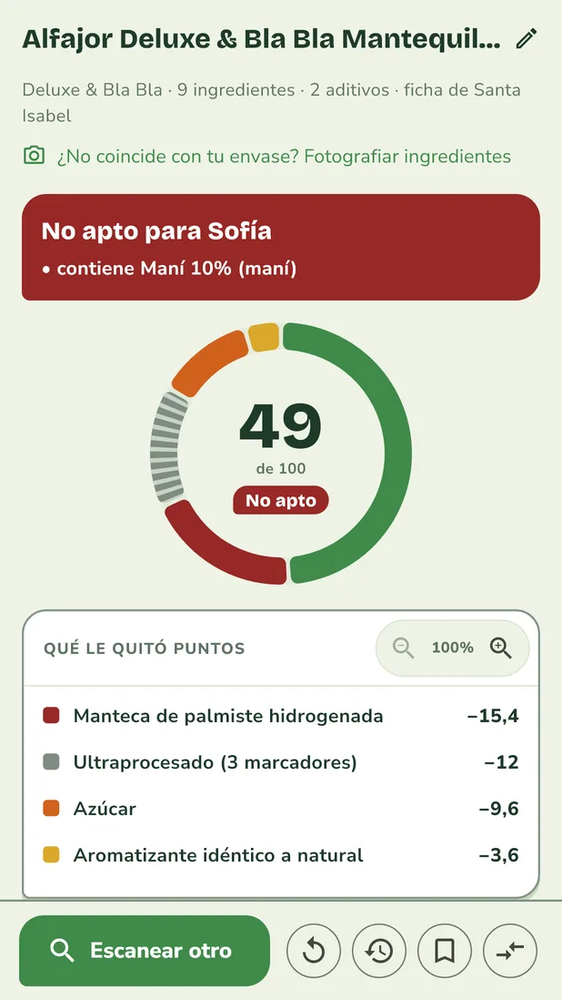
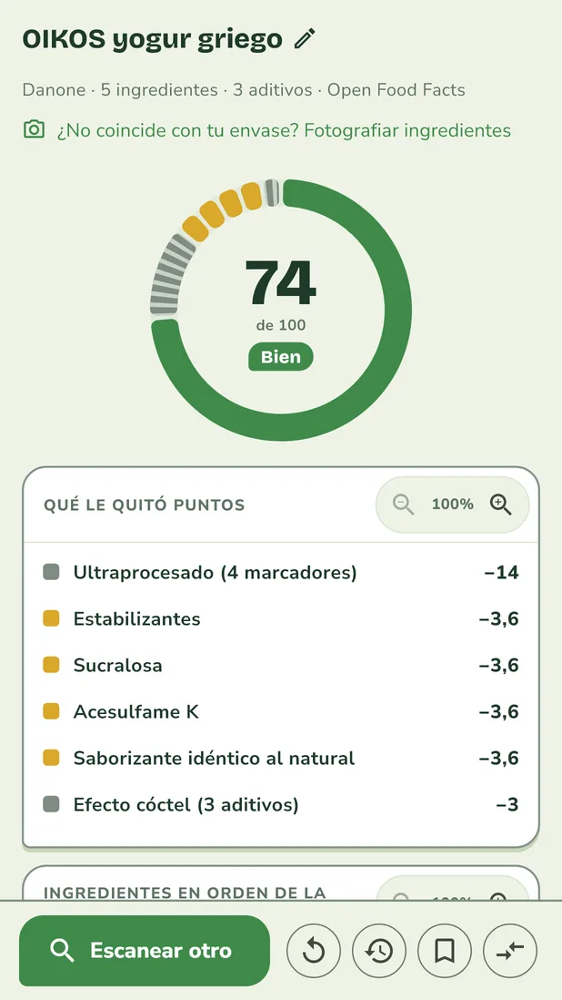
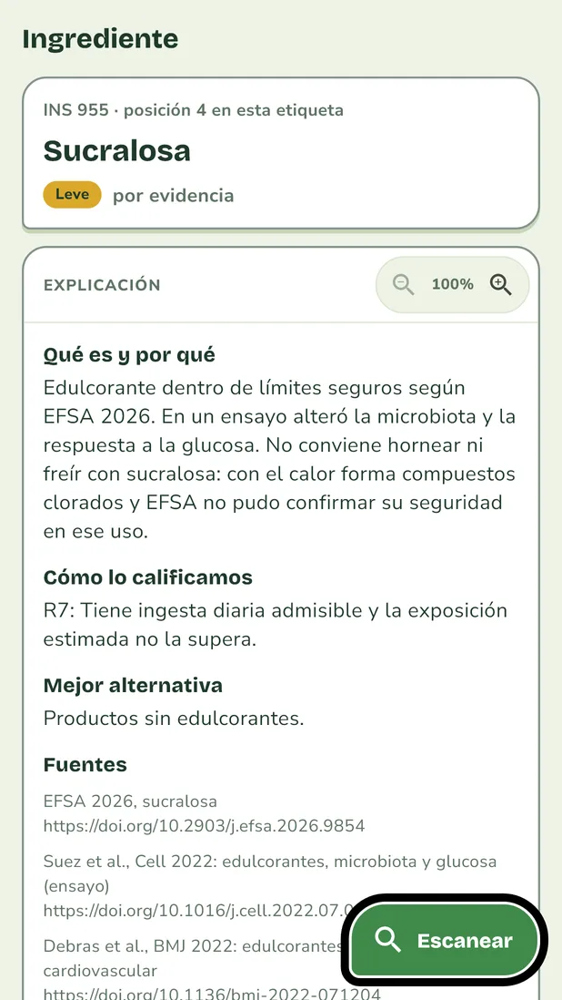
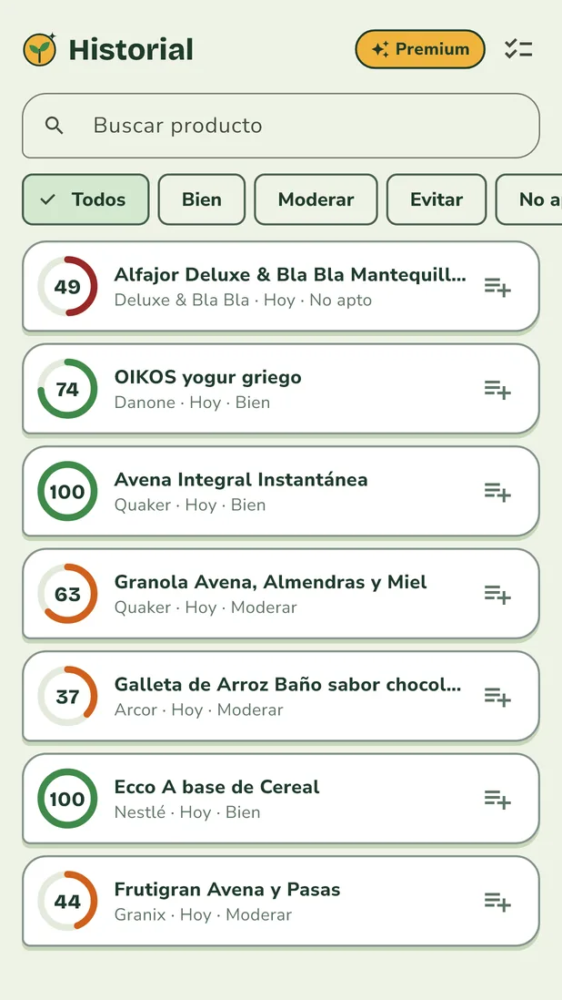
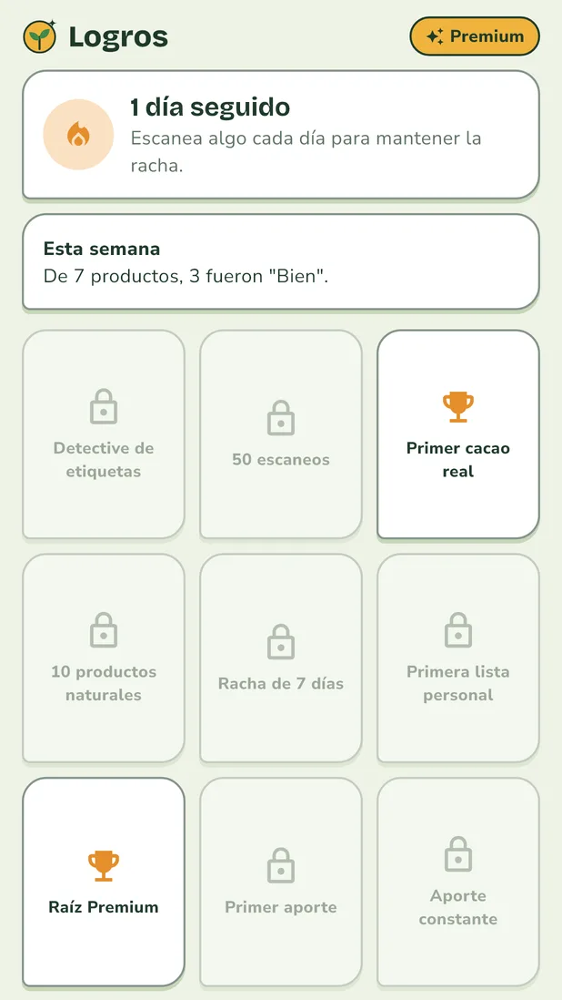

Entiende lo que comes antes de echarlo al carro.
Escanea el código de barras o la etiqueta de un alimento y Brote te dice qué trae: ingredientes, aditivos y alérgenos, con la fuente de cada evaluación.
Para publicar Brote, Google pide que la prueben al menos 12 personas por 14 días. Súmate en 3 pasos desde tu Android.

Cómo funciona
Tres pasos en el pasillo del supermercado
Apunta
La cámara lee el código de barras sola. Si el producto no está, lee la lista de ingredientes de la etiqueta.
Mira el resultado
Un anillo de 100 puntos muestra cuánto le quita cada ingrediente, del verde al rojo.
Toca para saber más
Cada ingrediente explica qué es, para qué se usa y de dónde sale su evaluación.
Qué pasa al escanear
Lo conozca o no, siempre llegas a un resultado
Si Brote conoce el producto
La app trae en el teléfono más de 13.600 productos que se venden en Chile con sus ingredientes. Lee el código de barras y el resultado aparece al instante, aunque no tengas señal.
Si no está en el teléfono y tienes internet, lo busca en Open Food Facts, la base pública de alimentos.
Si es un producto nuevo
- Te pide una foto de la lista de ingredientes.
- La lee en el mismo teléfono, sin enviar la foto.
- Te muestra lo que leyó, por si hay que corregir algo.
- Da el resultado y suma el producto al registro de la comunidad: la próxima persona que lo escanee lo encuentra al tiro.
Para toda la familia
Hecha para quienes hacen las compras de la casa
Cada integrante con su pauta
Agrega a tu familia con sus alergias y dietas. Brote avisa si un producto no es apto para alguien.
Con fuentes, sin alarmismo
Las evaluaciones vienen de EFSA, JECFA, IARC y el Reglamento Sanitario de los Alimentos. Separa lo que dice la evidencia de lo que pide tu pauta.
Funciona sin señal
La base de productos viaja en el teléfono. Lo que se escanea se suma al registro de la comunidad para que otras familias lo encuentren.




Gratis y Premium
La versión gratis es completa de verdad
Gratis
$0
- Escaneo de código y de etiqueta
- 1 integrante con sus alergias y dietas
- Ficha y fuente de cada ingrediente
- Historial, logros y listas de hasta 5 productos
- Modo senior y lupas de zoom
Con anuncios responsables: solo avisos pequeños, nunca a pantalla completa ni con video, y nunca mientras escaneas. Ayudan a financiar el proyecto sin estorbarte.
Premium
$4.990 pago único, sin suscripción
- Sin anuncios
- Hasta 6 integrantes de la familia
- Listas sin límite y lista de compras para el súper
- Modo estricto para tu pauta
- Comparar productos lado a lado
- Apoyas que Brote siga creciendo
Alergias, gluten y accesibilidad nunca se cobran.
Tu privacidad
Lo de tu familia se queda en tu teléfono
Brote no pide cuenta. Integrantes, alergias, historial y fotos no salen del teléfono. Solo se comparte la información del producto que escaneas, para que otras familias lo encuentren. Lee la política completa.